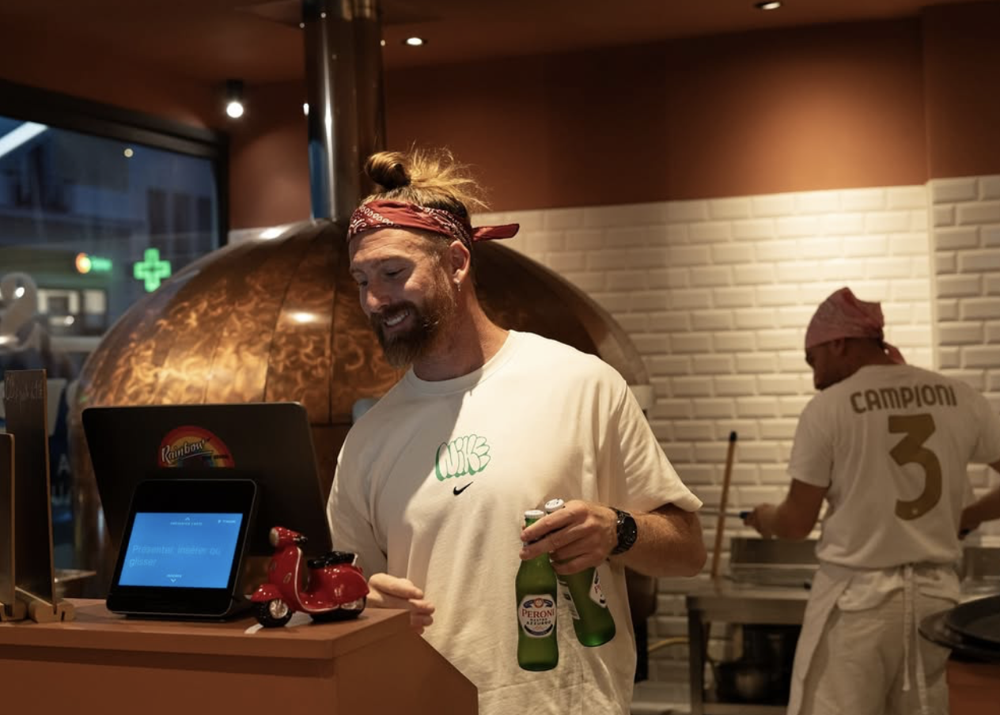
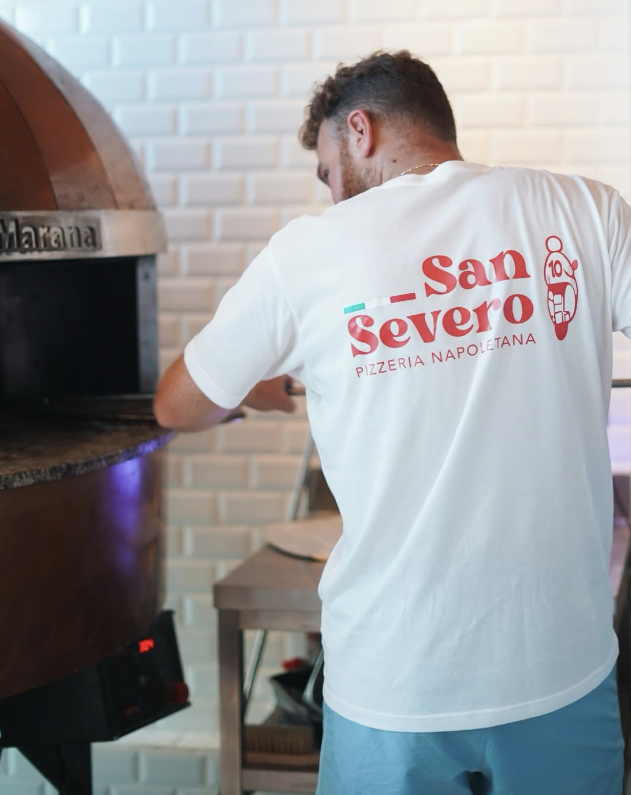

Le truc qui fait la différence
Une vraie napolitaineSimple, généreuse, cuite au feu de bois — comme à Naples.
Maison, vraimentPâte à pizza + desserts faits maison. Qualité constante.
Rapide pour l’emporterTu appelles, tu récupères. Pratique quand t’as faim (tout de suite).
Horaires
| Lundi | Fermé |
| Mardi | 19:00 – 21:30 |
| Mercredi | 12:00 – 14:00 • 19:00 – 21:30 |
| Jeudi | 12:00 – 14:00 • 19:00 – 21:30 |
| Vendredi | 12:00 – 14:00 • 19:00 – 22:00 |
| Samedi | 12:00 – 14:00 • 19:00 – 22:00 |
| Dimanche | 19:00 – 21:30 |
Avis
Note Google : 4,9 (277 avis). Les gens parlent surtout de la pâte, des ingrédients et de l’accueil.


Ambiance
Simple, cool, jeune — et ça bosse au feu de bois.

